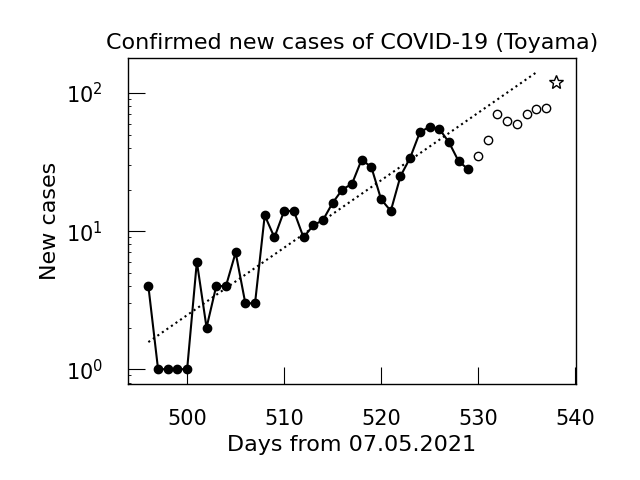
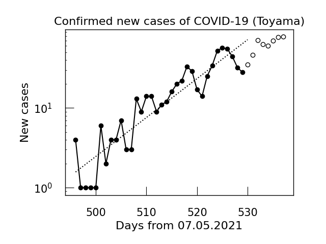

2021/08/31
8月が終わってしまった．どうして...．
連成振動についての演習をするなど．そろそろTOEICの勉強しないと...．それから，電磁気もよくわかっていないことが発覚したので，砂川の演習書をときましょうかね．特に物質中の電磁気．
2021/08/30
大学の端末室でMathmaticaをつかって立川さんがやっていたWignerの半円則の計算実験をやってみた．
2021/08/29
電磁場が調和振動子の系と等価であることのわかりやすそうな資料[pdfへのリンク]．
sageでWignerの半円則の計算をやろうと思ったが，実行時間が膨大な上， 実対称行列の固有値に複素数が出てきたりした．どうして...．
田崎統計力学の一巻をとりあえず読み終わった．といっても全く自分のものになっていないので， しっかり復習しないといけないが．七章は統計力学を黒体輻射，CMBに適応したりして，なかなかアクロバティックな議論が続いた． CMBに適応するところは，途中で平衡状態を仮定していたが，宇宙に平衡状態を仮定してはいけないと田崎熱力学に記述があったのでは．これが許されるのはなぜだろう．
2021/08/28
前期の物性でやった比熱のモデルについて． Debye modelをやったときにcutoff振動数とか分散の小さい弾性波 とか，よくわからない仮定をしていたが，それの理由はきっちり田崎に書いてあった．
田崎ではもう少し自然なモデルの計算をしやすい近似としてDebyeの比熱の式をもとめているが，そのモデルですら 直感的に現実に合いそうにないモデル，しかし普遍的な低温および高温極限の性質は 説明できる，ということに驚いた．具体的に，自然に考えると三方向に自由度のある系の安定点からずれは， ある一方向にずれた場所からずれるはずだが，田崎で扱っているものは平衡点からそれぞれずれている，というもの．
2021/08/27
統計力学の比熱のために格子振動の勉強をした．力学の連成振動なので，この機会に ランダウの記述や詳解の問題演習をしたいと思う．
2021/08/24
場の古典論として，Lagrangianがあたえられたところから，Coulombポテンシャルを導くのをやった． Helmholtz型微分方程式をGreen関数をもちいてFourier変換して解くやりかたが場の理論では出てくるらしく，Fourier変換の行き先では \(\Delta\leftrightarrow -k^2\)という対応があることが肝らしい．
複素積分をする際に $$\int dz \frac{e^{iz}-e^{-iz}}{z}=\lim_{\delta\to0}\int dz \frac{e^{iz}-e^{-iz}}{z+i\delta}$$ という計算が出てきたが，普通に留数で解けるのでは？
2021/08/23
留数積分の練習．留数はLaurent展開の\(-1\)次の係数で， 孤立特異点周りでの積分は\(2\pi i\)倍の留数だけの寄与になる．
高位の極の留数の計算法をいつも忘れるので導出（もどき）を書いておくと， \(\varphi(z)\)を\(z=a\)で正則な関数として，\(k\)位の極を持つ関数を $$f(z)=a_{-k}(z-z_{0})^{-k}+\cdots+a_{-1}(z-z_{0})^{-1}+\varphi(z)$$ の形に書くと，\((z-z_0)^{k}\)をかけて\(k-1\)回微分すると\(-1\)次よりまえが消えて，留数だけ残る． $$\frac{d^{k-1}}{dz^{k-1}}\left((z-z_{0})^kf(z)\right)=(k-1)!a_{-1}.$$ 両辺\((k-1)!\)でわって\(z=z_0\)としたものが，よくある公式．
2021/08/22
以前からやろうと思っていたCOVID感染者数の週平均をとってプロットするのをようやくやった．
pandasのDataframeだと，df.rolling(window=n).mean()
とすると，n個の移動平均がとれる．デフォルトではその値を先頭にして，うしろn個の移動平均だが，
windowのあとにcenter=Trueとすると，それを真ん中としての移動平均になる．
統計力学で出てくるstirlingの公式はGamma関数の漸近展開からでてくるものであると知った．せっかくなのでプロットしてみると，意外と\(x\)が小さくてもあってる．
2021/08/21
寝違えで首を痛めてしまった．よくない．
今日もGamma関数，Beta関数あたりの諸公式について勉強．わすれかけているので，明日は複素積分の練習をしようかしら．
2021/08/20
ここ数日怠けてしまっていて本当に良くない．反省．
SchwartzのQFTを少し読んだ． 量子力学の\(\langle p|x\rangle\)と\(\langle p|\phi_0(x)|0\rangle\)の対応から\(|x\rangle\sim\phi_0(x)|0\rangle\)の対応が見れるのが面白い．あとは，場の古典論のセクション．
最後に特殊関数の勉強もすこし．sageの使い方がいつまでも覚えられない．プロットしながら関数の振る舞いの感覚を身につけたい．
2021/08/19
今日もShuwartzのQFTを少々．第二量子化のあたり．Introductionでもそうだし，電磁場とかPhotonの場とかを 調和振動子の集まりとして扱うのは，まさに統計力学の手法だなと，「場の量子論は統計力学」という誰かの言葉がなんとなくわかった．
2021/08/18
やはり感染者数は多く出て，120人を超えたようだ．指数関数的増加はとまらない．

SchwartzのQFTをすこし読んだが，一番最初は黒体輻射の話が 載っていた．量子論の導入にもよく用いられる話題だが，導出を追ったことが なかったので追ってみたが，教科書に"beautiful result"と書いてあるほどの感動は得られない． 歴史的にちゃんと学んだ人にはこの結果が美しくい見えるのだろうか...．
2021/08/17
お盆休みが開けたようで，今日がお盆最終日の検査結果がでるくらいで 県の感染者数の動向に注目していたが，この通り．以後，どうなるか．やすみだったこともふまえると，以前の 指数関数のフィットに乗ってきそうな予感もするが...．

大学が開いていたので，生協で買い物をしてきた．あたらしいLinuxの教科書と， 以前に注文していたSchwartzのQFTの本を買った．それと，キーボードを買った．
さて，勉強の方だが，とりあえず田崎統計力学の5章を一気に読み切った． 二原子分子理想気体の比熱について学んだ．田崎の脚注に実験値が理科年表にあるとされていたので， 実際の実験データと比較して，回転からの寄与が大きく，振動からの寄与は小さいということもどこかでじっくりやりたい． いい加減他の勉強もやらなければいけないし，田崎の復習もしなければいけない．
2021/08/16
統計力学でエネルギー等分配則をやったのが面白かったですね．Hamiltonian中の自由粒子の項と 調和振動子の項に \(k_{\text{B}}T/2\) 単位でエネルギーが分配されるのが面白い．
田崎統計力学の図5.9，Maxwell-Boltzmann分布のグラフだが，明記されている式(5.6.6)じゃ足りなくて，\(\|\vec{v}\|\)がとる状態数，
すなわち速度空間での半径\(\|\vec{v}\|\)の球殻について積分しなければいけない．それでいちおうプロットするとこんな感じ．
2021/08/15
昨日に引き続きCEED5thに参加した．印象に残っているのはArcの 話で，虹に似ている現象だが，虹は水滴を球として，そのなかで反射とかを考えるのに対し， Arcでは氷晶が六角中の形をしていることから，見られる現象として違うらしい．ミクロな違いがマクロな現象に現れるのは 統計物理みがあるし，統計力学的な手法で何かわからないかなと漠然と思ったり．講演者の方がつくっている解説ベージもある．
それから，HTMLで画像をpngファイルへのリンクをとばすのではなく，ページにembedするようにした．width 300くらいがちょうど良さそう？
2021/08/14
今日も磁性体への統計力学の応用について．Heisenberg交換相互作用を考えたとき，エネルギー固有値は \[E_\vec{\sigma}=-J\sum_{i=1}^{N/2}\sigma_{2i-1}\sigma_{2i}+\sum_{i=1}^{N}\mu_0H\sigma_{i}\] となるが，この係数の\(J\)の正負で磁化率の振る舞いが変わるのが面白かった．
前期にやっていた，銅の比熱データのへのEinstein modelからのフィットについて， 高温でずれる原因は銅の融点付近（ちょうど1357[K]くらい）だからではないかとtさんに指摘を頂いた．
2021/08/13
磁性体の統計力学を勉強した．spinがたくさん独立にあるとして， 分配関数につっこむと，常磁性体の磁化が再現されることをみた．統計力学恐るべし．
いちばんすごいと思ったのは，断熱消磁．\(N\)-spin系の分配関数から， エントロピーを計算して，断熱準静操作でエントロピーが不変であることから，その表式内の \(H/T\)が一定となる．これを用いて，磁場を変えることで低温が実現できるらしい．
ちょうどこれを書いているときに，rくんと少し議論ができて，磁場の変化を利用して低温にするのは 一般に磁気冷凍ということを教えてもらった．
2021/08/12
朝から熱力学のゼミに参加したが，結構忘れているので復習しなければなと．（そして朝は眠い...．）
ここ最近，統計力学の勉強をしているが，熱力学の関係式を忘れていたり，しっかり自分で手を動かせるようにしなければいけない．
2021/08/11
今日はUbuntuの環境構築で一日が終わった感じだ．TeXやpythonをいれたり，VScodeとGitHubの連携をしたりして， 以前とほぼ同様の環境に戻った気がする．さて，あとはSlackとメール関係かな．
2021/08/10
ついに，Windowsを破壊してUbuntuをインストールした．このツイートに実況を吊るしている． 使っているPCがSurface Laptop2ということで， それが悪さをしてキーボードが打てなくなったが，mさんやpさんの助けを借りたりして，翌日の午前四時に解決した．そのときのツイートがこれ．
2021/08/9
Eq.\eqref{number_of_state}について，粒子間相互作用のポテンシャルにある条件を入れたときは， 厳密に状態数がそのようにふるまうらしい．式をみるとわかるように，言わんとすることは体積を増やすと，状態数が爆発的にふえるということで，状態数勘定の時に これが効いてきそう．ただし，一般の状況については証明はなくて，健全な熱力学的な系ならこれは満たすだろうと信じられている，といった具合．
この条件といい，canonical分布のガバガバな導出といい，ある程度具体例を見た方がよさそう．ということで， 具体例として，2準位系をcanonical分布で扱うなどをした．
2021/08/8
uさんにBibTeXを教わった．とりあえずLaTeXの作業するフォルダの一番上に .bibファイルを置いて，絶対パスを通したけど， 調べる限りTeXLiveのどこかにおいていろいろやった方がよさげ(というか， ネットで調べたらその方法しか出てこない)ので時間があればそれをやりたい．(それから，はやくLinuxに乗り換えねば...．)
2021/08/7
canonical分布の導出を追った．春にやったときは，このあたりの近似に近似を重ねる式変形の意義やモチベーションがわからなくて 面白みが分からなかったけど，前期の物性の授業でEinstein分布を扱って 具体例に触れてモチベーションを得た．canonical分布は着目する系と熱浴全体として micro canonical分布に従うとして，熱浴のほうをいじいじしていく感じ．
「熱力学的に健全である」ことの条件 \[\Omega_{V,N}(E)\sim\exp(V\sigma(\epsilon,\rho)) \tag{1}\label{number_of_state}\] が導出に関わってくるが，よくわかっていないので，そのあたりを勉強しよう．
{kind=link}